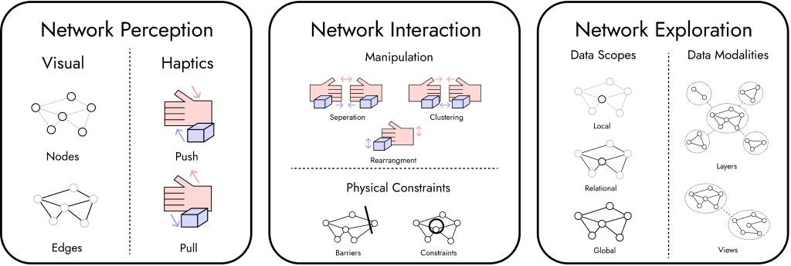
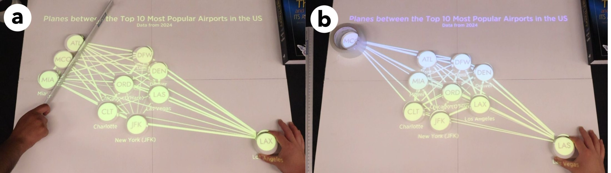
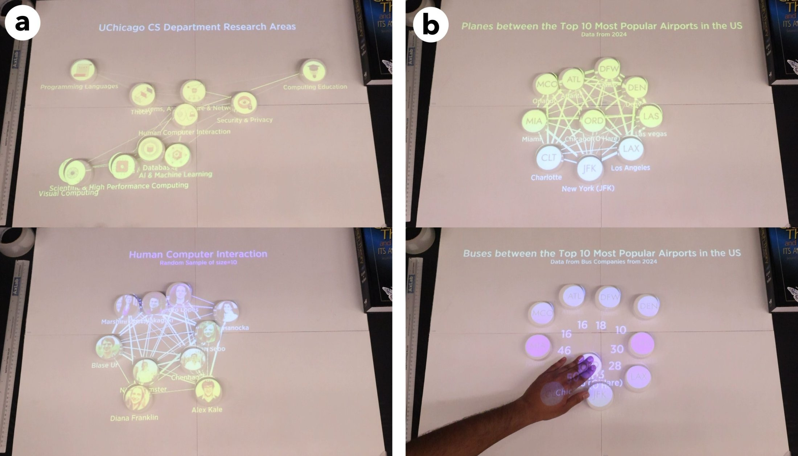
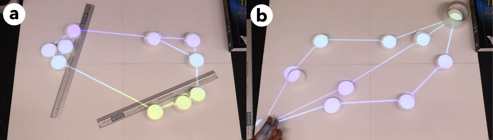

UIST ’26 Adjunct · Demo
NodeBots
Physicalizing network-based data with swarm user interfaces.
Abstract
Data Physicalization is an emerging area of data representation that uses a wide variety of physical mediums and data sources. We propose ‘NodeBots’, a novel approach that integrates Swarm User Interfaces (SwarmUIs) with Network Visualizations to create an interactive, swarm-based physicalization of network graphs. NodeBots allows users to physically interact with the nodes of network graphs, creating physical metaphors for embodied graph interactions through the rich affordances of SwarmUIs. In this paper, we explore NodeBots’ interaction space and its applied interactions, such as sparse cuts and shortest paths.
Interaction space
The interaction space covers Network Perception (Haptic and Visual Feedback), Network Interaction (Manipulation and Physical Constraints), and Network Exploration (Data Scopes and Layers).



Implementation
Nodes and edge weights are loaded into an Eades force-directed simulation that runs continuously: connected nodes are pulled together and unconnected ones pushed apart. Each node is a toio robot in a custom 3D-printed shell that steers toward its node’s position in the simulation, while an overhead projector draws the graph onto the robots. Pushing or pulling a robot changes the simulation and is felt as the network resisting, and physical constraints become computational ones.
Examples
Users can physically apply graph algorithms, exploring different sparse cuts that partition a network, or pulling two nodes apart so the tension pulls the shortest path between them taut.

Video
Cite
Ramarko Bhattacharya, Alan Pham, and Ken Nakagaki. 2026. NodeBots: Physicalizing Network-Based Data with SwarmUIs. In The 39th Annual ACM Symposium on User Interface Software and Technology (UIST Adjunct ’26), November 02–05, 2026, Detroit, MI, USA. ACM, New York, NY, USA, Article 145, 3 pages. https://doi.org/10.1145/3830397.3842445
@inproceedings{10.1145/3830397.3842445,
author = {Bhattacharya, Ramarko and Pham, Alan and Nakagaki, Ken},
title = {NodeBots: Physicalizing Network-Based Data with SwarmUIs},
year = {2026},
isbn = {9798400728556},
publisher = {Association for Computing Machinery},
address = {New York, NY, USA},
url = {https://doi.org/10.1145/3830397.3842445},
doi = {10.1145/3830397.3842445},
abstract = {Data Physicalization is an emerging area of data representation that uses a wide variety of physical mediums and data sources. We propose ‘NodeBots’, a novel approach that integrates Swarm User Interfaces (SwarmUIs) with Network Visualizations to create an interactive, swarm-based physicalization of network graphs. NodeBots allows users to physically interact with the nodes of network graphs, creating physical metaphors for embodied graph interactions through the rich affordances of SwarmUIs. In this paper, we explore NodeBots’ interaction space and its applied interactions, such as sparse cuts and shortest paths.},
booktitle = {Adjunct Proceedings of the 39th Annual ACM Symposium on User Interface Software and Technology},
articleno = {145},
numpages = {3},
keywords = {Actuated Tangible User Interface, Embodied Interaction, SwarmUIs, Network Graphs},
location = {Detroit, MI, USA},
series = {UIST Adjunct '26}
}